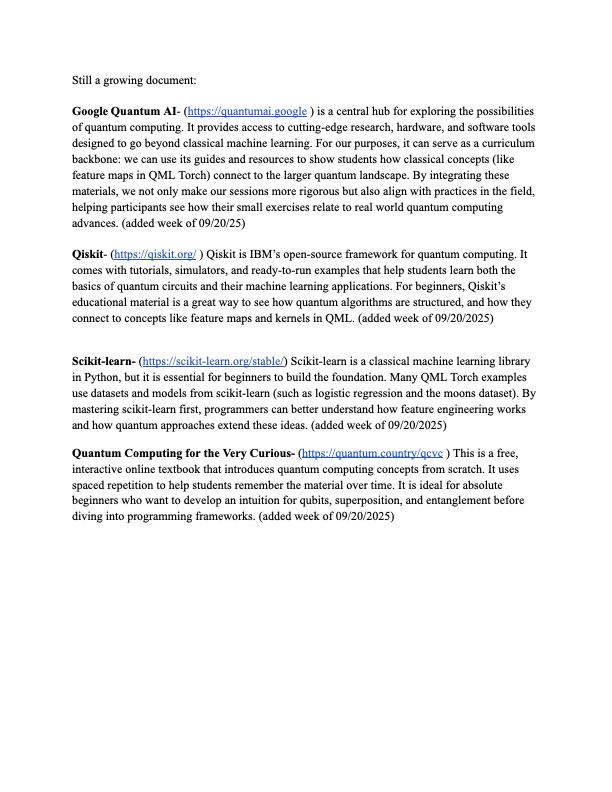

Back to QML Outreach
QML Learning Resources
Status: Growing document

Why I Built This Guide
QML Torch is also an outreach and teaching project. I assembled this guide
so students with different backgrounds could build the classical and
quantum foundations needed to contribute. The resources connect beginner
intuition, programming tools, machine learning basics, and current quantum
computing material.
Starting Points
-
Google Quantum AI
for research, software, hardware context, and curriculum material.
-
Qiskit
for quantum circuits, simulators, tutorials, feature maps, and kernels.
-
scikit-learn
for datasets, preprocessing, classical baselines, and model evaluation.
-
Quantum Computing for the Very Curious
for beginner intuition and spaced-repetition learning.
Source Material
Open the original QML Torch resource guide